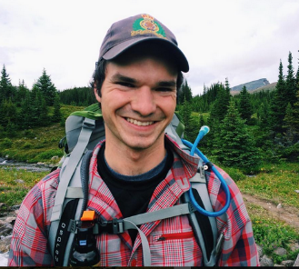

Patrick Walter
1328 Robie Street, Halifax, Nova Scotia,
Skype:pt365049@dal.ca Email: pt365049@dal.ca Cell: (613) 878-0205
PERSONAL DETAILS

Birth: Canada, 1992
Citizenship: Canadian
English Ability: Native
Marital Status: Single
Health: Excellent
EDUCATION
TESOL/TESL Certification (100 Hours)
Oxford Seminars, Halifax, NS 2017
Bachelor of Computer Science,
Certificate in Data Science,
Certificate in Artificial Intelligence and Intelligent Systems
Dalhousie University, Halifax, NS 2017
Bachelor of Science,
Major in Computer Science
St. Francis Xavier University, Antigonish, NS 2014
PROFESSIONAL EXPERIENCE
Brewster Travel Canada Jasper, AB
Dispatch May 2015 October 2017
Communicating with tour directors of international tour companies to ensure smooth operations and positive experience for their group of clients.
Interacting with independent international travelers to check-in, make or change reservations, and sell retail. Effectively communicating with non-English speaking guests to answer questions and direct them to their tour.
Brewster Travel Canada Jasper, AB
Tour Guide / Boat Captain May 2015 October 2017
Prepared and presented 90-minute interpretive tours to groups of 40+ passengers of independent travelers or tour groups from a variety of countries.
Worked alongside tour directors to directly translate tour to the native language of the tour group. Answered questions from non-English speaking guests.
Trained and supervised staff members on safe boat operations and ensured accurate and correct tour information. Explained and taught basic geology, botany, glaciology, and marine mechanics.